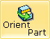
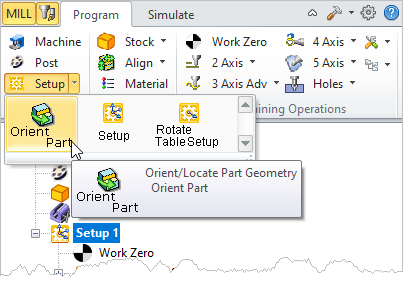
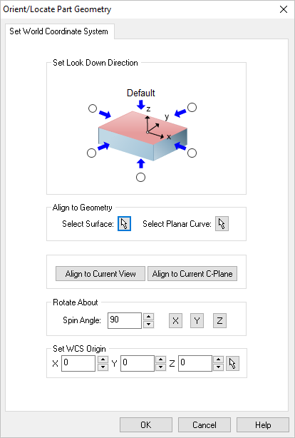

Once part geometry is loaded, you can set the cutting direction. This allows you to orient the part to have it aligned properly for machining. This dialog can be invoked by selecting Setup and Orient Part from Program tab under the Machining Browser. This dialog has some very powerful options to help you quickly position your part for machining. refer to the dialog and options listed below.
 Machining Browser: Setup, Orient Part |
The dialog offers a convenient way of selecting each of the six principal directions to set the cutting direction.
 Dialog Box: Orient Geometry |
Select the radio button representing the orthographic view of your part that you wish to machine. For example, select the right side radio button (on the positive X side in the dialog image) will rotate your part so that the positive X direction becomes the positive Z direction.
|
If your part is not aligned orthographically, you can use these options to align your part to selected geometry or active display element. Select from one of the options that will orient the part that you wish to machine:
•Select Surface
 Choose the Pick button and then select a surface of your part to orient to. The part will be aligned such that the surface normal direction is aligned with the -Z axis. Choose the Pick button and then select a surface of your part to orient to. The part will be aligned such that the surface normal direction is aligned with the -Z axis. •Select Planar Curve
Choose the Pick button and then select a Planar Curve of your part to orient to. The part will be aligned such that the curve will be parallel to the XY plane (i.e., normal to the Z axis). •Align to Current View
Pick this button to align the part such as the Current View direction is aligned with the Z axis (i.e., you are looking in the -Z direction). •Align to Current C-Plane
Pick this button to align the part so that the Current C-Plane becomes parallel with the XY plane. |
Use this option to Rotate About one of the principal XY or Z axis. Enter an angle and then select the button representing the axis you wish to Rotate About.
|
You can also independently set the coordinate location for the WCS. So for example, you can orient the part normal to a surface and then also choose a point on the surface to become the new WCS origin. In this case the part would be oriented to the surface while the point on the surface remains at the WCS.
|
Once you select a direction, all of the geometry will be rotated to an orientation where the selected cutting direction becomes the negative Z axis.
1.Select Orient Geometry under Setup after loading the part.
2.Select Setup and Orient Geometry from the program tab. 3.Now click on the Radio button next to the arrow corresponding to Y axis and click OK. 4.The part is now oriented as shown below.
Set As Current View Direction orients part parallel to the current view orientation.
|
|